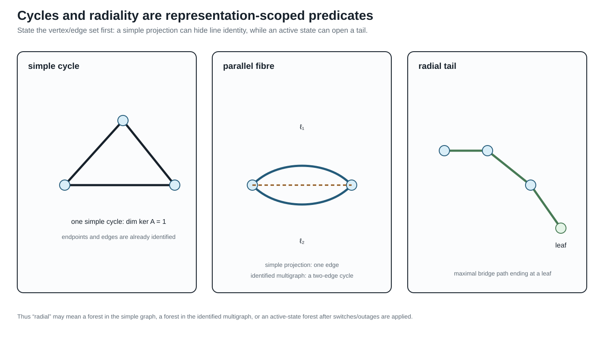

Cycles, parallelism, and radial structure
Page status: representation-scoped graph definitions with executable invariant witnesses, including conductor-terminal and state-conditioned lifts; broader multi-terminal compilation families remain open.
Why these words need a representation
Power-system discussions often say that a network has a cycle, a parallel line, or a radial end as if these were properties of the physical system alone. They are first properties of a declared mathematical representation. A simple topology graph, an identified line multigraph, a junction–factor incidence graph, and a compiled equation graph can give different answers while all being legitimate views of the same network.
This chapter applies the normative object and matrix conventions in Multigraphs for expert modelers to cycle, parallelism, bridge, leaf, and radiality questions. The electrical and decision meaning of a topological statement is a second question: constitutive equations, limits, states, and observations must still be attached.
The preceding two-level topology chapter explains why asset, conductor/port–factor, and nodal-operator support graphs can have different edges and cycles. Here those distinctions become explicit cycle, parallelism, bridge, leaf, and radiality definitions.
Simple cycles and line-identity cycles
Let $G_{\mathrm s}=(\mathcal B,E_{\mathrm s})$ be a loopless undirected simple graph. A simple cycle is a closed walk with at least three distinct vertices and no repeated edge or internal vertex. Its cycle-space dimension is
\[\mu_{\mathrm s}=|E_{\mathrm s}|-|\mathcal B|+c,\]
where $c$ is the number of connected components. The equation counts a vector-space dimension; it does not select a unique cycle basis.
For the loopless specialization of the normative flag multigraph, write
\[G_{\mathrm M}=(\mathcal B,\mathcal L,\partial), \qquad \partial:\mathcal L\rightarrow\binom{\mathcal B}{2}.\]
Choose an arbitrary stored orientation for each line and let $A$ be its oriented incidence matrix. We use the following representation-aware definition.
Definition. A line-identity cycle is a nonzero vector $z\in\ker A$ whose support is inclusion-minimal among nonzero vectors in $\ker A$. A cycle basis is any basis of $\ker A$. Reorienting a line negates one incidence column and changes the coordinates of $z$ but not the underlying cycle or its dimension.
This is the circuit definition of the graphic matroid written in incidence coordinates. It includes the two-edge cycle made by parallel lines. If $\ell_1ij$ and $\ell_2ij$ have the same unordered endpoints, their two incidence columns are equal up to sign, so a vector supported on $\{\ell_1,\ell_2\}$ lies in $\ker A$. The cycle does not require three distinct buses.
For a loopless multigraph with $c$ connected components,
\[\mu_{\mathrm M}=|\mathcal L|-|\mathcal B|+c.\]
The simple projection $\operatorname{simp}:\mathcal L^{\circ}\rightarrow E_{\mathrm s}$ forgets line identity and retains the unordered endpoint pair. In this loopless specialization $\mathcal L^{\circ}=\mathcal L$; the superscript makes the non-loop domain explicit. The cycle-rank difference is then
\[\mu_{\mathrm M}-\mu_{\mathrm s} = \sum_{e\in E_{\mathrm s}}\bigl(|\operatorname{simp}^{-1}(e)|-1\bigr).\]
Thus each additional identified member in a parallel fibre contributes one line-identity cycle dimension, even though the simple graph sees only one adjacency. The five-bus example makes this loss explicit: its source rank is three and its simple projection rank is two because the fibre over the endpoint pair $\{q,r\}$ contains two lines.
The cycle vector is a topological object. A nonzero cycle coordinate in a branch-current parameterization is not automatically a circulating current, and a topological cycle does not imply that power is flowing around it at a particular operating point.
Do not use cycle, cycle-basis coordinate, and loop flow as synonyms. The first two are properties or coordinates of a declared graph; the last is an operating statement requiring electrical variables and equations.

The three panels are deliberately side by side: the triangle is a simple cycle, the parallel fibre contributes a cycle only when line identity is retained, and the tail is a maximal bridge path ending at a leaf.
Conductor-terminal and state-conditioned lifts
The running-network conductor-terminal witness carries the same distinction one level closer to the electrical factors. Each ordered conductor map becomes a member edge between terminal vertices such as $i1/a$ and $i2/a$; the line identity is retained, so parallel phase or neutral members remain visible. The artifact experiments/generated/conductor-terminal-lift-witness.json reports member and simple-projection cycle ranks for open and closed switch states. An unknown switch is represented by both admissible realizations rather than being silently treated as open, so radiality is a state-conditioned observation.
This is still a terminal-incidence witness, not a universal rule for compiling every multi-terminal factor. A three-winding transformer can be represented as a factor node, a star compilation, or a clique compilation; those choices are separate views whose cycle spaces must not be conflated with the physical terminal graph.
Parallelism has levels
The phrase parallel lines is underspecified. The book distinguishes the following tests, from weakest to strongest:
| Level | Condition | Where it can be decided |
|---|---|---|
| topological parallelism | same unordered bus pair $\partial(\ell_1)=\partial(\ell_2)$ | identified multigraph |
| terminal parallelism | endpoint terminal spaces and terminal maps align, up to declared coordinate actions | terminal-connectivity or port model |
| electrical parallelism | both factors see the same boundary voltage variables and their currents can be summed | port–factor or equation model |
| operational parallelism | both members are active in the declared switch, outage, investment, and state scenario | asset/state and decision model |
| homogeneous parallelism | construction, grounding, parameter, and constraint guards support a physical merge | asset plus electrical model |
Only topological parallelism is visible in a bare multigraph. In a simple graph it is not an internal relation at all: it survives only as the fibre
\[\operatorname{simp}^{-1}(\{i,j\})\subseteq\mathcal L^{\circ}\]
of the multigraph-to-simple-graph quotient. In a port–factor model, the two lines remain separate factors attached to the same junction variables. That representation can test whether a phase permutation, neutral connection, grounding scope, control, and limit really align.
Electrical parallelism permits a terminal relation such as
\[\mathbf I_{ij}^{\mathrm{total}} =\sum_{\ell\in \operatorname{simp}^{-1}(\{i,j\})}\mathbf I_{\ell ij},\]
but it does not permit replacing member constraints by a summed constraint. That replacement needs an explicit implication or lifting certificate. A parallel pair can be electrically aggregable for an unconstrained nodal admittance and still be operationally non-aggregable because its members have different ratings, outages, owners, or investment decisions.
Degree, leaves, bridges, and radial ends
For a bus $i$, define the distinct-neighbour degree in the simple projection and the incidence degree in the loopless identified multigraph by
\[d_{\mathrm{nbr}}(i) =|\{j:\{i,j\}\in E_{\mathrm s}\}|, \qquad d_{\mathrm{inc}}(i) =|s^{-1}(i)| =\sum_{e\in E_{\mathrm s}:\,i\in e}|\operatorname{simp}^{-1}(e)|.\]
These are different measurements. Because this chapter's identified multigraph is loopless, $d_{\mathrm{inc}}$ also equals its incident-member count; the equality would require adjustment if graph loops were admitted. A bus joined to one neighbour by two parallel lines has $d_{\mathrm{nbr}}(i)=1$ but $d_{\mathrm{inc}}(i)=2$. Calling it a leaf or calling it degree one without naming the convention is therefore ambiguous.
We use these precise terms:
- a simple leaf bus has $d_{\mathrm{nbr}}(i)=1$ in the declared simple projection;
- a multigraph leaf bus has $d_{\mathrm{inc}}(i)=1$ in the declared loopless identified multigraph;
- a pendant line is a bridge incident to a leaf in the declared graph;
- a radial tail is a maximal path of bridges ending at a leaf, with any internal buses of the path having degree two in that graph;
- a pendant subnetwork is a region attached through one articulation bus; it need not itself be radial.
An edge is a bridge if deleting that identified edge increases the number of connected components. A simple edge $e$ represents a parallel fibre $\operatorname{simp}^{-1}(e)$ in the multigraph.
Proposition. For a line $\ell$ in a loopless identified multigraph, $\ell$ is a bridge if and only if $\operatorname{simp}(\ell)$ is a bridge in the simple projection and $|\operatorname{simp}^{-1}(\operatorname{simp}(\ell))|=1$.
Proof. If another line shares the same endpoint pair, deleting $\ell$ leaves that pair connected, so $\ell$ cannot be a bridge. Conversely, suppose the fibre of $e=\operatorname{simp}(\ell)$ is a singleton but $\ell$ is not a bridge. Then there is a multigraph path between the two sides after deleting $\ell$. Projecting that path and removing repeated vertices gives a walk, hence a path, in the simple graph with $e$ deleted. This contradicts that $e$ is a simple-graph bridge. Therefore a singleton fibre over a simple bridge is a multigraph bridge, and the two conditions are equivalent.
Corollary. The identified multigraph is a forest if and only if its simple projection is a forest and every nonempty edge fibre is a singleton.
This gives two useful but different radiality predicates:
\[\begin{aligned} \text{adjacency-radial}&:\Longleftrightarrow G_{\mathrm s}\text{ is a forest},\\ \text{member-radial}&:\Longleftrightarrow G_{\mathrm M}\text{ is a forest}. \end{aligned}\]
Adjacency-radial does not imply member-radial. A feeder with two parallel circuits can have a tree-shaped simple projection and still contain a line-identity two-cycle. Conversely, a simple graph can be meshed even when a particular operating state opens enough members to make the active multigraph radial.
Radial feeder is incomplete unless it names both the graph and the active state. In particular, a tree-shaped simple projection can hide parallel member cycles.
“Radial end” should therefore be replaced in technical writing by the graph, state, and object being tested: for example, “the $m$ end is a pendant bridge in the active identified multigraph” or “the simple bus projection has a leaf at $m$.”
Upstream and downstream are state-conditioned hierarchy labels
For a resolved radial state $\sigma$, choose a source root $r$ and orient the active tree away from $r$. The resulting rooted forest is a useful derived view:
\[\mathcal R(\sigma,r)= \bigl(G_M^\sigma, r, \operatorname{par}_{\sigma,r}, \operatorname{depth}_{\sigma,r}\bigr).\]
It supports parent/child, ancestor/descendant, feeder-head and downstream subtree queries. It is not a fifth canonical electrical graph: it is a state-specific algorithmic view over the identified graph.
The labels become non-unique or undefined when:
- a component has more than one source or no designated root;
- the active graph contains a cycle;
- a switch state is unknown;
- a tie closes or a parent branch opens;
- a topology decision changes the energized component.
For a meshed state, a selected spanning forest may still provide a convenient parent map, but the omitted chords remain cycle edges. Their directions are bookkeeping choices and their equations must remain in the model. Calling all mesh branches upstream or downstream silently replaces the source graph by an unstated tree projection.
Switching therefore requires recomputing the hierarchy for every resolved state. A transformation or recursion that uses parent/child structure must carry $\sigma$, the root choice, the tree or forest identity, and a recovery map to the stable $\ell ij$ reference orientation. It is valid for that declared state domain, not automatically for the inventory or for every future switching action.
In a technical statement, write “downstream in the active identified tree rooted at $r$ under $\sigma$,” or use “parent edge,” “source-distance,” and “operating transfer direction.” Unqualified upstream/downstream labels are not stable semantics on a meshed or reconfigurable network.
Multi-terminal factors change the question
A multiwinding transformer represented as one factor is not an ordinary graph edge. The arbitrary-arity flag/incidence definition and its typed relation spaces are given in Multigraphs for expert modelers. Its natural incidence structure can be displayed as a bipartite graph:
bus i -- factor x -- bus j
\-- bus kThis junction–factor incidence graph is a tree. A clique projection onto bus vertices creates the triangle $ij,jk,ki$; a star compilation through a virtual junction remains a tree. The apparent cycle can therefore be created by the representation rather than by an alternative physical transfer path.
The same warning applies to hyperedges, grounding factors, shared controls, and equation graphs. A cycle in a factor-incidence graph means repeated incidence through factors and junctions. A cycle in a nodal-admittance sparsity graph means algebraic coupling. Neither should be silently called a physical power-transfer loop.
Consequences for decisions and reductions
The graph predicates above do not authorize a transformation by themselves:
- a bridge may carry a load, generator, measurement, grounding relation, protection boundary, or investment decision;
- a leaf may be the boundary of a nontrivial factor or a retained observation;
- a radial tail may be reducible for one boundary relation and indispensable for another;
- a parallel pair may provide outage redundancy even when its simple projection contains only one bridge;
- opening a chord is a topology decision, not a coordinate change;
- summing parallel admittances can preserve $Y$-bus behavior while changing member-level feasible sets.
For a declared graph transformation, the preservation contract should record at least:
- the graph whose cycles, degrees, bridges, or forests are being tested;
- whether members are identified, aggregated, or merely projected;
- the active state and admissible future states;
- the boundary quantities and source constraints that must be recovered;
- the provenance fibre for every quotient edge or compiled factor.
The scope rule is simple:
A cycle, parallel relation, bridge, leaf, or radiality claim must name its representation. None of these graph properties, alone, authorizes an electrical reduction.
Executable active-state certificate
The package-independent witness in experiments/generated/active-radiality-witness.json compares a four-member inventory with an active state in which one of two parallel members is open. The inventory's simple projection is radial, but its identified multigraph is not: the parallel fibre contributes a line-identity cycle. After the outage, the active identified multigraph is a tree, so both active radiality predicates agree. This is the small counterexample needed before using radiality as a guard for a conductor-coordinate or phase-to-phase reduction.
The running-network witness extends this counterexample to declared switch and line-outage states. Each state row records the active line, switch, and transformer-winding inventories before reporting cycle ranks. Opening the switch therefore changes the active inventory without silently deleting the switch asset, while an $l2$ outage removes exactly that line member. The transformer remains represented by explicit winding members with factor provenance. Radiality is consequently a predicate of the state-conditioned member inventory, not a permanent property of the asset inventory.
The five-bus companion experiments/generated/five-bus-active-radiality-witness.json makes the same distinction on the chapter's line-identity example. Its inventory has member cycle rank 3 and simple-projection cycle rank 2; the declared spanning tree $\{r,s,w,u\}$ is radial at both levels. This is claim TR-GRAPH-ACTIVE-001: the active state must be named before calling the network radial.
Run it with:
julia --project=experiments experiments/run_active_radiality.jl
julia --project=experiments experiments/run_five_bus_active_radiality.jl